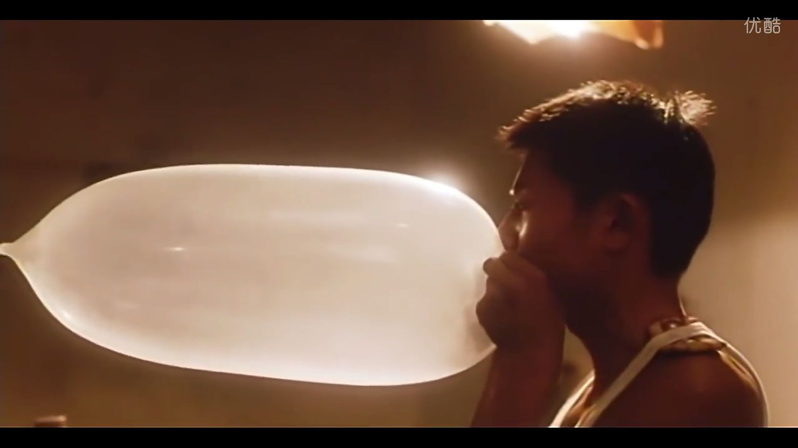
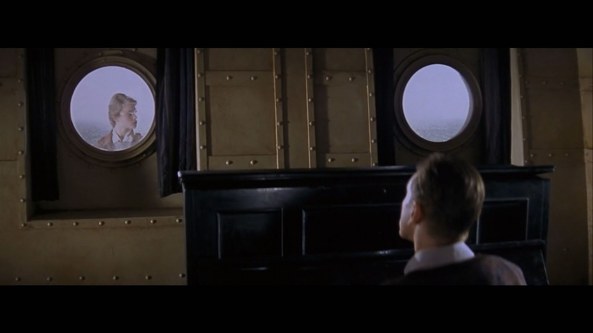

闭了眼睛情况也丝毫不会好转，
不是说闭起眼什么就会消失，
恰恰相反，睁开眼时事情会变得更糟，
闭眼是怯懦的表现，把眼睛从现实移开是胆小鬼的行为，
即使在你闭眼捂耳之时，时间也照样挺进，喀，喀，喀。
今日大雨，我出不了门。
我尝试想了想自己是什么样子？杂乱的长发，穿双老拖鞋，趴于桌子，亦或者盘坐于凳子上。时而伸个懒腰，时而扭个腰。
听说是台风来临了，这次总算没跑偏，寝室里电风扇都省得开了，除了雨声，安静的不行，有点儿受不了，幸好还存在着音乐，放点儿就明显舒服多了。
我往窗外望去，雨很大，斜着下。风一吹，就更加斜了，与一切规规矩矩，直线上升的物体，形成着鲜明对比。
近日来，我尝试着让自己的时间变长点，比如说晚睡早起，又或者看许多电影，做很多梦。有人说电影可以延长生命的长度，对我而言，这最后一个暑假便想着通过电影来延长，当然，回顾七月，确实是看了不少电影。
电影真是个充满着魅力的东西，里面的自由，美丽，一切看似像生活却又是人精心设计的生活，让人羡慕不已，忍不住将自己假设于其中，翩翩飞舞。
但现实是，我抱着自己的枕头，正睡的香。冲了个澡，我撑着我的额头，用力去回忆这些日子。
我想我应该干了很多的事。日子一天天过，寝室四人都没回家，让我产生了还在上学的假象，正如八月的来临，这点事我也从未意识到的。
我开始对一切产生质疑，丢失了应该是种生活的感觉。
不过，我想我应该干很多事，我想我的生活还是精彩万分的。
下场雨，这世界明显好多了啦，看的都远了。